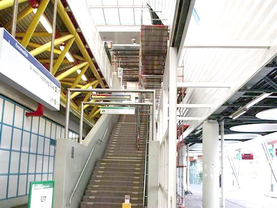

Update werkzaamheden metronet en meer nieuws...
- donderdag 11 december 2008 22:14
- Geschreven door Joachim
Tussen de wisselcomplexen Waalhaven I en Waalhaven II werd vanmiddag korte tijd enkelsporig gereden, via spoor 2. Dit kwam door heiwerkzaamheden voor het toekomstig viaduct van de Betuwelijn en aanverwanten, in verband met veiligheid kon daardoor spoor 1 niet gebruikt worden. Door de nieuwe dienstregeling die vanaf vandaag ingegaan is, was het enkelspoorbedrijf zonder problemen uit te voeren, er ontstonden geen vertragingen.
Binnenhof
Op station Binnenhof is men de laatste dagen bezig met het storten van de perronvloer. Hierdoor kan er noodgedwongen maar van één spoor gebruik gemaakt worden, wanneer de werkzaamheden plaatsvinden. De kokendhete teer/asfalt wordt op het perron gestort en daarna gladgestreken. Na afloop wordt er zand in het bijna verharde afsfalt geveegd. Hieronder diverse foto's:
Op sommige plaatsen is het perron niet te betreden, er wordt dan ook gebruik gemaakt van een ander perron...
De kokendhete teer wordt op het perron gegoten en vervolgens gladgestreken. Dit is vakmanschap...

Met dit voertuig wordt de teer aangeleverd. Nee, het is nog niet van het perron afgereden.
Spijkenisse Centrum
Ook op station Spijkenisse Centrum vorderen de werkzaamheden. Het dak van de stationshal is volledig gerenoveerd, en lijkt haast nieuw. Het doel van de verbouwing is het veraangenamen van het reizigersgevoel. Veel reizigers voelden het station als onveilig aan, daar wordt dus nu verandering in gebracht. Wanneer de werkzaamheden afgerond zijn, is niet bekend. Een paar foto's van de situatie op Spijkenisse Centrum:
De steigers staan er nog, maar op grote delen is het dak al vernieuwd...
Ook nodig, de hoogwerker. Het is niet zomaar een station...
Dit is de nieuwe beplating voor het dak aan de binnenzijde.

Goed te zien, de binnenzijde van het dak was eerst groenig, nu helder wit.
Controle-acties
Vandaag werden er controle-acties gehouden op o.a. de stations Graskruid en Schiedam Centrum. Een aantal mensen werd bekeurd voor het niet in bezit hebben van een geldig plaatsbewijs in zowel de metro zelf als op het station.
Beneluxlijn
Tussen station Vijfsluizen en de tunnel-toerit zijn de laatste weken werkzaamheden geweest aan het viaduct. Aan de onderzijde van de betonnen viaductdelen zijn schijnwerpers geplaatst, die het gehele viaduct 's nachts en 's avonds verlichten. Ook de pilaren worden verlicht. Toekomstig collega Willem Bruins, van M-Stuff maakte de volgende foto's van de nieuwe schijnwerpers. Voor de fotograaf is het zeker de moeite waard om hier in de avonduren wat plaatjes te schieten:
Tussen de toerit van de tunnel en station Vijfsluizen zijn onderstaande schijnwerpers aangebracht...